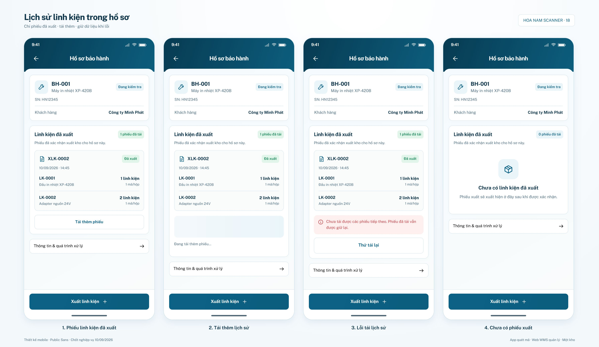
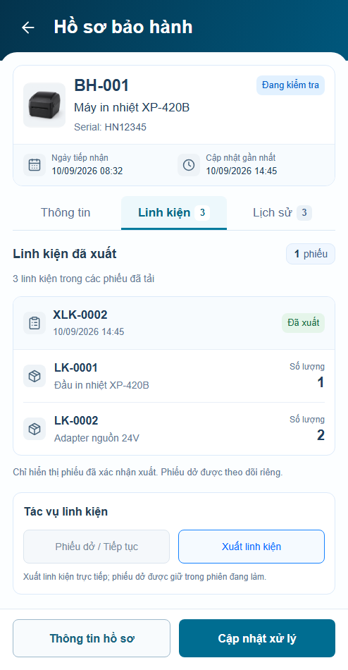
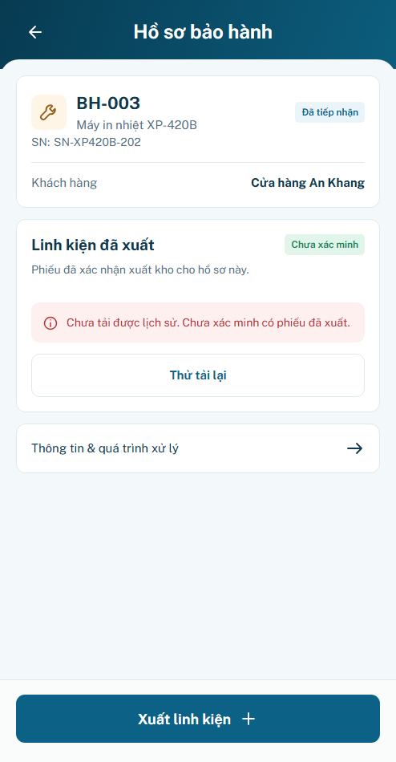
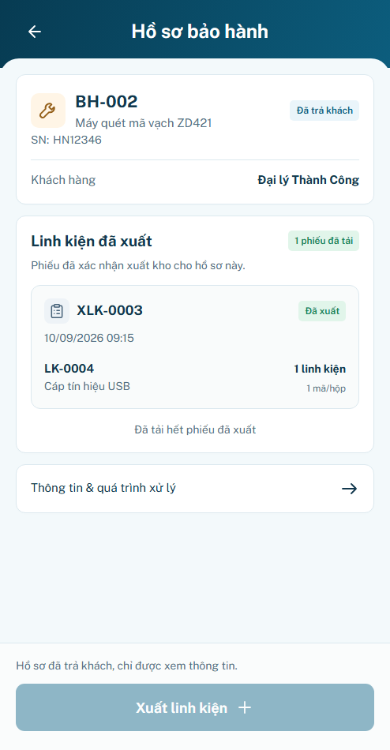
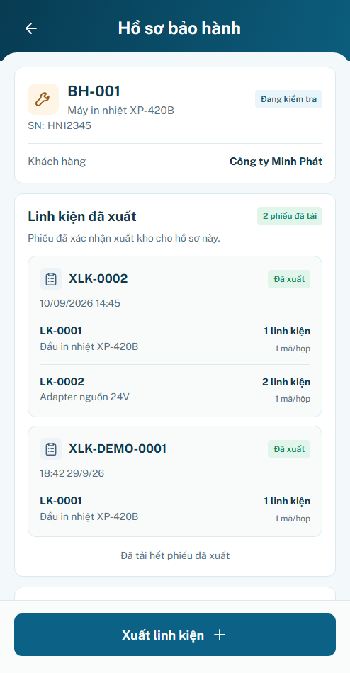
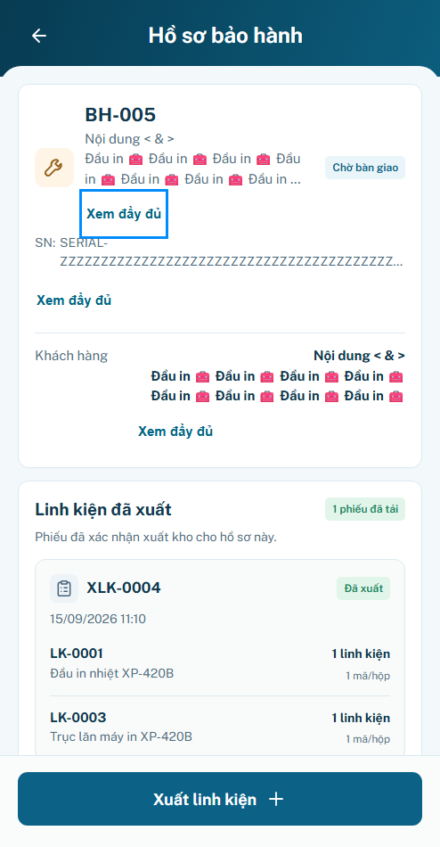
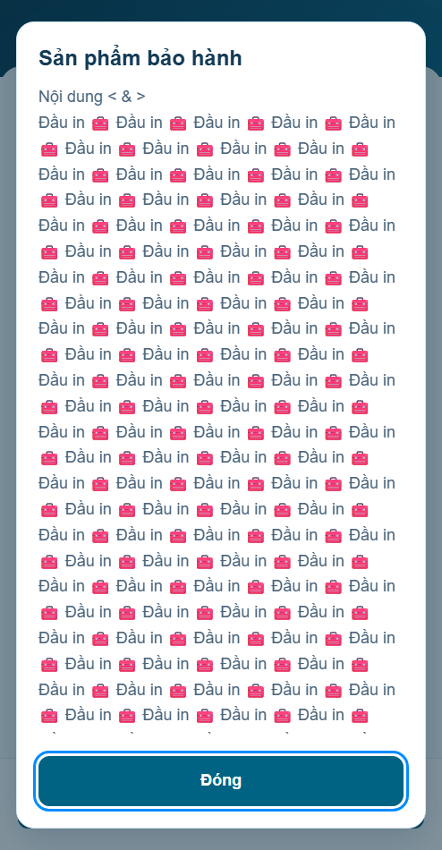

P20 r01 · Lịch sử linh kiện
Đủ P20.S01–S04. Khung 494×950 CSS px, DPR1, Public Sans local, zoom100%, Asia/Ho_Chi_Minh. Ảnh dưới chỉ thu nhỏ đồng nhất để review. Hình thức chờ user review; behavior PASS prototype; production BLOCKED. P19 r03 được user tạm chốt, state đồng bộ sẽ bổ sung sau.
Mở ứng dụng · minhanh / preview · Bảo hành → BH-001 → Linh kiện → Xem lịch sử phiếu linh kiện. Bốn panel mẫu trong bộ mô phỏng P20 ngoài khung app. Báo cáo · Nguồn và số đo.
P20.S01 · Phiếu đã xuất P20.S02 · Tải thêm
P20.S02 · Tải thêm P20.S03 · Lỗi tải thêm
P20.S03 · Lỗi tải thêm P20.S04 · Rỗng đã xác minh
P20.S04 · Rỗng đã xác minh
Baseline B20 và khác biệt có nguồn
Giữ context/phiếu nhóm/quantity bên phải/loading–error inline/link thông tin/CTA đáy. Thay reference390×844 bằng frame494×950 theo user; bỏ status bar/gesture giả; icon pastel từ chuẩn khóa. Header86px, footer103px, body padding20/gap14. Không có ngưỡng raster nghiệm thu, không tuyên bố pixel-perfect.

Trước triển khai và các ca bổ sung
P20 chưa có màn nhúng trước revision này; ảnh trước là tab Linh kiện P09 (không phải baseline P20). Link P20 được thêm, P09/P19 vẫn giữ owner.
Trước · P09 Linh kiện
Lỗi nguồn lần đầu
Hồ sơ đã trả khách
Receipt P19 đúng hồ sơ
Nội dung dài và dialog đọc đủ
Context dài không mất dữ liệu
Dialog trong app
Fixture giữ trong bộ nhớ trang; reload mất phiếu. Không gọi endpoint tự suy đoán, không sửa tồn hoặc tự đóng hồ sơ. P21/P23/P24 đầy đủ chưa được nghiệm thu bởi công việc P20 này.